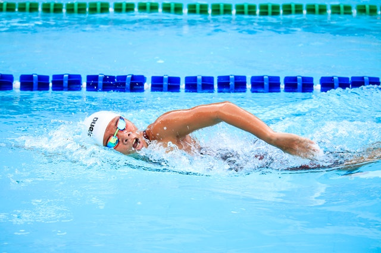

A brief history of swimming
- Posted by
- January 23, 2021
- Number of comments
- 4 Comments
Competitive swimming in Britain started around 1830, mostly using breaststroke. Swimming was part of the first modern Olympic games in 1896 in Athens. In 1908, the world swimming association, Fédération Internationale de Natation (FINA), was formed.
10,000-year-old rock paintings of people swimming were found in the Cave of Swimmers near Wadi Sura in southwestern Egypt. These pictures seem to show breaststroke or doggy paddle, although it is also possible that the movements have a ritual meaning unrelated to swimming. An Egyptian clay seal dated between 9000 BC and 4000 BC shows four people who are believed to be swimming a variant of the front crawl.
Since swimming was done in a state of undress, it became less popular as society became more conservative in the Early Modern period. Leonardo da Vinci made early sketches of lifebelts. In 1538, Nikolaus Wynmann, a Swiss–German professor of languages, wrote the earliest known complete book about swimming, Colymbetes, sive de arte natandi dialogus et festivus et iucundus lectu (The Swimmer, or A Dialogue on the Art of Swimming and Joyful and Pleasant to Read). His purpose was to reduce the dangers of drowning. The book contained a good methodical approach to learning breaststroke, and mentioned swimming aids such as air-filled cow bladders, reed bundles, and cork belts.
Swimming emerged as a competitive sport in the early 1800s in England. In 1828, the first indoor swimming pool, St George's Baths, was opened to the public. By 1837, the National Swimming Society was holding regular swimming competitions in six artificial swimming pools, built around London. The sport grew in popularity and by 1880, when the first national governing body, the Amateur Swimming Association, was formed, there were already over 300 regional clubs in operation across the country.